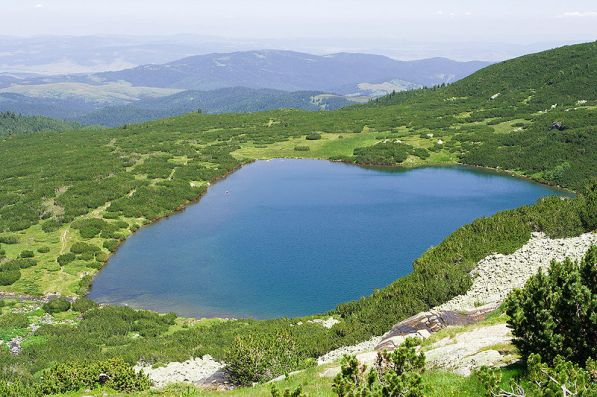

The lower lake is the lowest of the Seven Rila Lakes - on the lowest step of the vast circus of the same name .
Located in altitude 2095 meters above sea level . Its area is 59 decares and the volume is 240,000 m 3 . It is 330 m long and up to 260 m wide. Its greatest depth is 11 m.
It has a steep threshold from the south and east, from the west and north it is overgrown with dwarf pine and spruce.
The water that flows from the six upper lakes collects in the Lower Lake. Its outflow gives rise to the German River .
Along the western shore of the lake passes the path from Vada hut to the Seven Lakes hut .